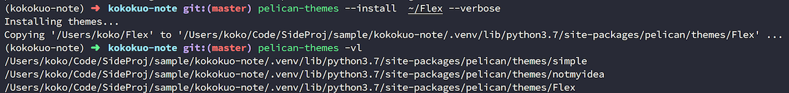

Python - 安裝 Pelican Theme 來改變你的靜態網站主題
Posted on Thu 14 March 2019 in Pelican
前言
在前兩篇 在 Mac 上使用 Python 的 Pelican 建立靜態個人網誌 與 使用 Github Page 作為靜態網誌的空間 - 以 Pelican 為例 我們知道了要如何使用 Pelican 來架設靜態網站。
但由於使用 Pelican 靜態網站產生器架設好的網誌所提供的預設版面與外觀並不好看，因此想要更換，但是要怎麼更換呢？ Pelican 會不會有像 Wordpress 一樣能夠更換的功能了？ 還是...難不成要用程式寫一個？
放心，Pelican 有提供給我們更換網誌外觀的功能哦，以下我們接著來設定。
安裝與設定 Pelican Theme
在 Pelican 中提供了許多可以更換你靜態網站的樣式外觀，這些樣式與外觀被稱作 「主題」( Theme )，許多的靜態產生器或是網站可能也都使用相同的詞彙。
而在 Pelican 中要安裝與設定非常容易，讓我們來執行以下步驟。
1. 挑選你喜歡的 Pelican Theme
有許多設計師設計了許多出色的主題，並且統一放在 Pelican 官網的 Theme 頁面中，如下圖：
當你從中挑選了你喜歡的主題，你可以點擊此主題的名稱連結，該連結多半會導到其主題的個人設計師官網或是這些主題所存放的 Github Repository，如下：

除此之外這些主題的 Repository 也有提供一個連結讓 Pelican Themes 的 Repository 統一管理，這個 Repository 你可以從 Pelican Themes 的官網中找到其連結。

進入到挑選的主題的 Repository 後，透過 git clone 或是點擊 Clone or download 下載檔案解壓縮。
2. 安裝 Theme 到你的 Pelican 網站中
(1.) 下載想要的 Theme
下載後先把下載的位置與目錄記錄下來。例如選擇了 Flex 這個主題，並透過 git clone 放在家目錄下：
$ ~/> git clone https://github.com/alexandrevicenzi/Flex
$ ~/> cd Flex
$ ~/(master)Flex/>

(2.) 安裝已下載的 Theme 到 Pelican 網站中
之後回到自己的 Pelican 網站，並且進入你的虛擬環境後確保 Pelican 的套件有安裝，Pelican 的指令能夠作用下，輸入以下指令
$ (kokokuo-note)kokokuo-note/> pelican-themes -h
usage: pelican-themes [-h] [-l | -p | -V] [-i theme path [theme path ...]]
[-r theme name [theme name ...]]
[-U theme path [theme path ...]]
[-s theme path [theme path ...]] [-c] [-v]
Install themes for Pelican
optional arguments:
-h, --help show this help message and exit
-l, --list Show the themes already installed and exit
-p, --path Show the themes path and exit
-V, --version Print the version of this script
-i theme path [theme path ...], --install theme path [theme path ...]
The themes to install
-r theme name [theme name ...], --remove theme name [theme name ...]
The themes to remove
-U theme path [theme path ...], --upgrade theme path [theme path ...]
The themes to upgrade
-s theme path [theme path ...], --symlink theme path [theme path ...]
Same as `--install', but create a symbolic link
instead of copying the theme. Useful for theme
development
-c, --clean Remove the broken symbolic links of the theme path
-v, --verbose Verbose output
以上是 Pelican 套件提供的主題指令，協助你查詢你用 Pelican 架設的靜態網站中，你如你可以透過 pelican-themes -l 來查詢你目前所有安裝的套件：
$ (kokokuo-note)kokokuo-note/> pelican-themes -l
simple
notmyidea
你會發現原來 Pelican 有預設幫你安裝了兩個主題，並且設定使用其中一個，所以你再啟動網站時才會看到，而在指令中也有提到安裝主題，這也是我們剛剛下載主題的原因，因為 pelican-themes 是指定需要安裝的來源路徑，而非指直接從網路上下載安裝，所以我們才會需要如上述先手動 clone 抓下來，接著指定來源位置為 git clone 下來的位置。
如下我們指令他的路徑，並安裝：
# 使用 --verbose 查看細節過程資訊
$ (kokokuo-note)kokokuo-note/> pelican-themes --install ~/Flex --verbose
透過 --verbose 參數來查看安裝的過程資訊，如果沒有這個參數的話，安裝時你會看不到安裝的過程與安裝到哪裡，除此之外你也可以透過縮寫指令來安裝：
# --install 與 --verbose 的簡短輸入方式
$ (kokokuo-note)kokokuo-note/> pelican-themes -vi ~/Flex
然後安裝完，你可以透過 pelican-themes -l 查看是否有安裝，只不過如果你想知道他安裝在哪裡，你可以也加入 --verbose 或 -v 看到：

你會發現，不管是預設的主題，還是安裝的主題，都會被放置到虛擬環境目錄 .venv 下的 pelican/themes/ 的位置。
由於哪天我們可能會自己不小心砍掉 .venv 虛擬環境，所以比較建議的方式是 Copy 一份到自己的網站目錄下，例如 themes 下：
# 此為範例，假設安裝在 Python 3.7 虛擬環境下...
$ (kokokuo-note)kokokuo-note/> mkdir themes
$ (kokokuo-note)kokokuo-note/> cp -r .venv/lib/python3.7/site-packages/pelican/themes/Flex themes/Flex
(3.) 移除安裝的 Theme
另外，如果你要移除主題，你可以使用 --remove 或是 -r 短指令來指定你要移除的主題名稱移除：

3. 設定 Pelican 網站使用的主題
當你安裝好主題後，此時我們需要讓我們的 Pelican 網站採用此主題才行，打開 pelicanconf.py，並添加此行：
# Flex 是你透過 pelican-themes 指令安裝的主題名稱, 因為安裝在 themes 目錄下，所以需指定 prefix 為 themes
Theme = 'themes/Flex'
此參數的設定來自 Pelican Setttings 文件中的介紹，在 Pelican 的教學文件中有列出對於安裝的主題，有哪些參數可以使用。
在 pelicanconf.py 加上 Theme = 'Flex' 後，再來我們就可以重新輸出一次 HTML 網頁並來預覽查看，透過 make html 指令來生出新的 HTML 檔案，並藉由 make serve [PORT] 開啟一個測試用的簡易伺服器協助測試與預覽：
# 生成 HTML 並 啟動服務
$ (kokokuo-note)kokokuo-note/> make html && make serve PORT=5000
如下圖，你會看到修改後的畫面，成功！

如果你對 Flex 這個主題有興趣，你可以去查看 Flex 主題提供的 文件 wiki，在其中有 Custom Settings) 的參數是 Flex 有提供可以設定的部分。
例如以下是我的一些簡易設定：
THEME = "themes/Flex"
SITETITLE = "Hello Titile"
SITESUBTITLE = "This is sample"
SITELOGO = "https://avatars3.githubusercontent.com/u/5389253?s=460&v=4"
SOCIAL = (('github', 'https://github.com/kokokuo'),
('linkedin', 'www.linkedin.com/in/easonkuo'),)
這些參數有些是 Pelican Settings 中提到的，有些是 Flex 這個主題客製化提供的，然後讓我們再次透過 make html 與 make serve [port] 指令來生出新的 HTML 檔案並測試：
大功告成！
後記
除了這個範本教學的 Theme，在 Pelican 中還有許多其他的 Theme 有興趣的話可以都下載來體驗看看。
另外在 Pelican 中除了主題以下，還有許多其他的插件可以使用，如果後續有機會，會在撰寫文章分享給大家，以及如何在 Github Page 上設定個人買的網域這件事。